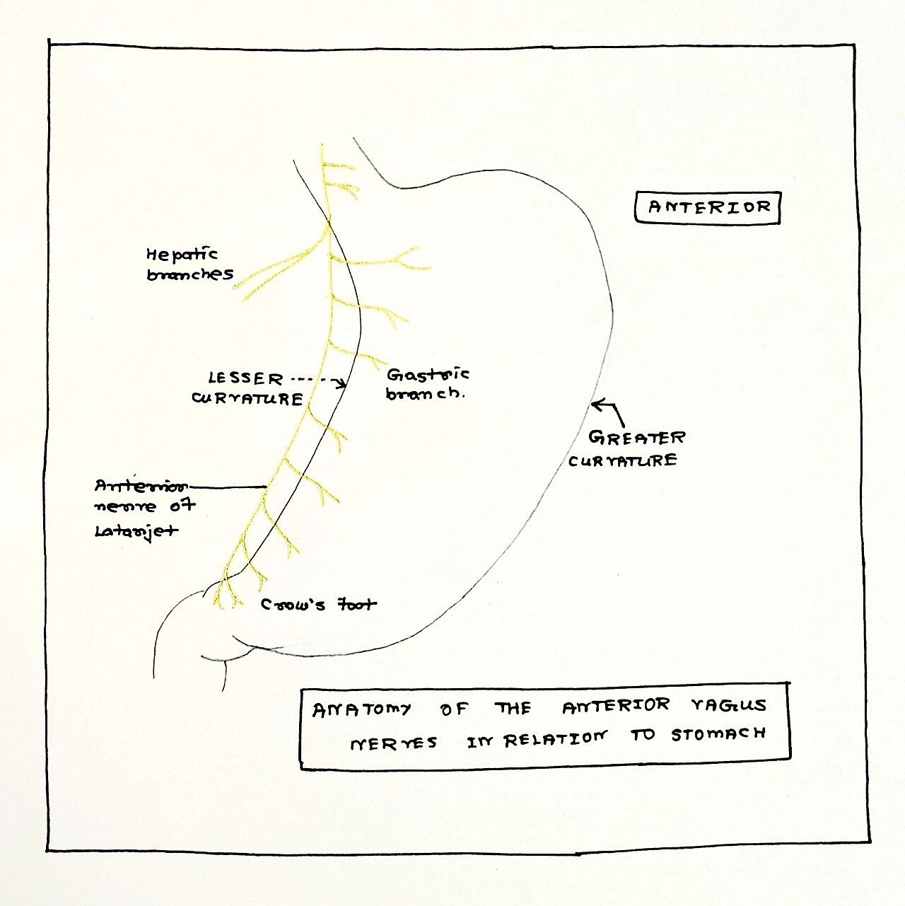
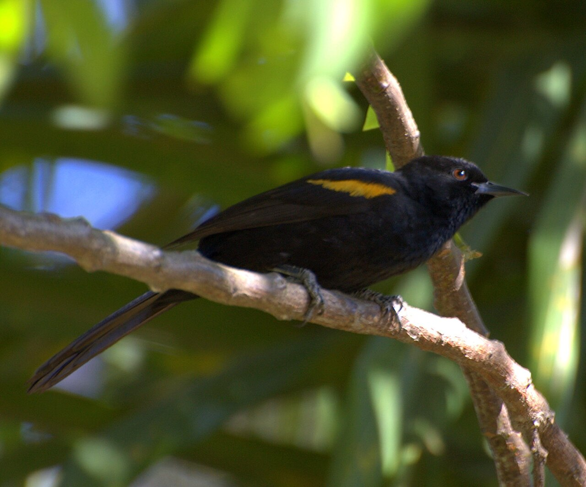

Lula.
diario de la mañana — el mundo, tu ciudad y lo que te asombra
Buen día. Esta es la edición número cincuenta, y me parece una buena excusa para que el jueves de cine sea el que más te va a gustar. Día de sol y calor: de 18° a 27 o 29° según la fuente, sin lluvia; la inestabilidad vuelve mañana. La ciencia de hoy salió ayer en Nature y es de las que parecen ciencia ficción y no lo son: un implante que se alimenta de la glucosa de la sangre y usa esa misma glucosa como señal para estimular el nervio vago.
- El mundo en cinco minutos3'
- Argentina y Buenos Aires2'
- Ciencia: un implante que come glucosa6'
- Mirá a tu alrededor2'
- Receta de estación2'
- La palabra del día1'
- Le français du matin2'
- English corner3'
- Jueves de cine: Las zapatillas rojas4'
- Hoy en la historia · un lugar2'
- Lo que me asombra hoy1'
- Pasatiempo: sudoku medio12'
- Cuaderno: repaso, quiz y escritura4'
Los tres, en la misma mesa, en Shenzhen
Hoy es el día central de la APEC y el de la reunión que se venía anunciando: Xi Jinping, Donald Trump y Vladímir Putin sentados juntos, con el control de armas nucleares en la agenda. Ayer fue el primer cara a cara entre Trump y Putin desde la cumbre de Alaska de 2025, y los tres se saludaron antes del banquete de bienvenida. Es la 33.ª edición del foro, que sesiona ayer y hoy.
Qué mirar: lo que se firma importa menos que lo que queda instalado. Una reunión trilateral crea un formato, y un formato es algo a lo que se puede volver: si sale de acá un canal técnico permanente —gente que se junta a discutir verificación e inspecciones—, habrá servido aunque el comunicado no diga nada. Si no, fue una foto. El trasfondo comercial es la restricción a la venta de chips de Nvidia, que es la otra guerra.
Y acá al lado
La UIA pidió un plan de seis años para bajar impuestos y advirtió por la caída del empleo industrial. Y en Europa siguen las protestas francesas por el costo de vida.
Dos dictámenes en una semana, y el dólar
Después del Presupuesto 2027, el Gobierno consiguió también dictamen en el Senado para suspender las PASO de 2027: se trata el jueves 26. El Presupuesto va al recinto de Diputados el 25. Es decir, la semana que viene se define el paquete entero.
Y el dato que se movió: el dólar financiero superó los $1.700 y la brecha con el oficial llegó al máximo del año. Mientras tanto, la discusión de fondo es si la economía entró en recesión técnica —dos trimestres consecutivos de caída—, algo que recién se confirma o se descarta con el dato del INDEC del 16 de diciembre. Para traducirlo: el Presupuesto que se vota la semana que viene proyecta 4 % de crecimiento para 2027, y se vota en una economía que probablemente esté cayendo ahora.
Para hacer en la ciudad
- Filarmónica en el Colón: sábado 21 a las 20 y domingo 22 a las 17, Walton y Sibelius. Y el sábado a las 11, ensayo general abierto y gratuito. Si vas a una sola cosa este fin de semana, que sea esta.
- Macciò en el Bellas Artes (Libertador 1473), hasta el 14 de febrero, gratis.
Un implante que se alimenta de la glucosa que está midiendo
De qué estamos hablando: de la medicina bioelectrónica, la idea de tratar enfermedades modulando nervios en vez de administrando drogas. Su obstáculo práctico no es conceptual sino de ingeniería: todo implante necesita energía, y una batería significa tamaño, vida útil limitada y una segunda cirugía. Este trabajo, publicado ayer en Nature por un grupo de la Universidad Nacional de Singapur, propone una salida elegante: que el implante se alimente de la glucosa del propio cuerpo, que además es la señal que tiene que medir.

Quién es quién
- Nervio vago: el décimo par craneal, el nervio más largo del sistema nervioso autónomo. Sale del tronco encefálico y baja inervando corazón, pulmones, hígado, páncreas e intestino. Es la vía principal del parasimpático y, de paso, el cable por el que el cerebro y el sistema inmune se hablan.
- Eje neuroinmune / reflejo inflamatorio: la vía descrita por Kevin Tracey hace veinte años. El vago detecta señales inflamatorias en la periferia y, por una rama eferente, frena la producción de citoquinas en el bazo. La inflamación crónica de bajo grado es uno de los motores de la resistencia a la insulina: de ahí que modularla tenga sentido metabólico.
- Biocelda de combustible de glucosa: un dispositivo que oxida glucosa en un ánodo —normalmente con glucosa oxidasa— y reduce oxígeno en el cátodo, generando corriente. La glucosa deja de ser solo el analito y pasa a ser el combustible.
- Lazo cerrado: el sistema mide, decide y actúa solo, sin intervención externa. Acá el lazo es doblemente elegante: a más glucosa, más energía disponible y más estímulo. La dosis se autorregula por física, no por software.
Qué encontraron
- El dispositivo, al que llaman NeuroAxis, funciona sin batería ni transferencia inalámbrica de energía: toda su potencia sale de la glucosa endógena.
- En modelos de rata de diabetes tipo 1 y tipo 2, restauró la tolerancia a la glucosa, mejoró la sensibilidad a la insulina y normalizó el control glucémico.
- El dato más fuerte: los efectos terapéuticos persistieron después de suspender el tratamiento. Eso sugiere que no está compensando un déficit mientras está prendido, sino cambiando algo en el sistema.
- Es tapa de número: Nature 659, páginas 647-656, con un News & Views acompañando.
Lectura crítica
- Son ratas, y el salto de escala no es trivial. La corriente de una biocelda depende del área del electrodo y de la difusión de glucosa y oxígeno; un humano no es una rata grande. Y las bioceldas de glucosa tienen historia de perder rendimiento en semanas, por ensuciamiento del electrodo y pérdida de actividad enzimática.
- «Persisten después de suspender» es la frase a mirar con lupa. Es el resultado más interesante y el que más necesita un mecanismo: ¿remodelación del tono vagal, cambio en poblaciones inmunes, epigenética? Sin eso, es un fenómeno.
- Hay conflicto de interés declarado: los autores figuran en una solicitud de patente de la Universidad Nacional de Singapur por el «eje neuroinmune artificial autoalimentado». No invalida nada —así se transfiere tecnología— pero corresponde saberlo al leer el entusiasmo.
La conexión con lo que estudiás
Acá se junta todo lo que viste por separado. La glucosa oxidasa es la misma enzima del glucómetro de tira y la que usan las abejas para conservar la miel; la diferencia es que acá, en vez de leer la corriente como señal, se la usa como corriente. Y el diseño enseña algo sobre control: un lazo cerrado donde el sensor, la fuente de energía y el actuador comparten la misma variable es intrínsecamente estable, porque si la glucosa baja el dispositivo se queda sin combustible y deja de estimular. No hay forma de que «se pase». Comparalo con una bomba de insulina, donde una falla de software puede entregar una dosis letal: es seguridad resuelta en el nivel físico, que es siempre el mejor lugar para resolverla.
«A glucose-powered artificial neuroimmune axis for metabolic control». Nature 659, 647-656, publicado el 18 de noviembre de 2026, doi:10.1038/s41586-026-11251-7 · el News & Views. Los detalles salen del resumen y de esa nota; el texto completo no lo vi.
Biotec en el mundo real · INVAP
Si el tema de hoy es un dispositivo médico, en la Argentina el caso grande se llama INVAP: una empresa de tecnología de la provincia de Río Negro, con sede en Bariloche, nacida de un convenio con la Comisión Nacional de Energía Atómica. Es, probablemente, la empresa de alta tecnología más atípica del país.
- Qué hace: reactores nucleares de investigación —exportó a Australia, Egipto, Argelia, Perú, Holanda—, satélites para la CONAE, radares, y una línea de tecnología médica.
- La parte que te toca: equipamiento para medicina nuclear y radioterapia, y plantas de producción de radioisótopos. Un radioisótopo médico, como el tecnecio-99m, tiene vida media de horas: no se puede importar, hay que producirlo cerca del paciente. Eso convierte a un reactor en infraestructura sanitaria.
- El modelo: es una sociedad del Estado provincial que compite internacionalmente por licitación y se financia con sus ventas. No es ni una empresa privada ni un organismo público clásico, y esa rareza es parte de por qué funciona.
- Salida laboral: ingeniería biomédica, física médica, radiofarmacia, control de calidad de dispositivos y todo el circuito regulatorio de ANMAT para productos médicos.
Ciencia en la vida cotidiana · Por qué el glucómetro se equivoca cuando bajás rápido
Los sensores continuos que se usan en el brazo no miden glucosa en sangre: la miden en el líquido intersticial, el fluido que rodea las células del tejido subcutáneo. La glucosa llega ahí por difusión desde el capilar, y eso lleva tiempo: el retraso típico es de 5 a 15 minutos. Si tu glucemia está estable, da igual. Si está subiendo o bajando rápido —después de comer, o durante ejercicio— el sensor va atrasado y puede marcar 90 cuando en sangre ya vas por 70.
Lo práctico: por eso los sensores muestran una flecha de tendencia además del número, y por eso ante una hipoglucemia sintomática la indicación sigue siendo confirmar con una punción. El número no está mal medido: está midiendo otro compartimento.
El crespón, que empieza ahora, y el boyerito
_Lagerstroemia_indica_-_inflorescences.jpg){kind=link}

-6-3c.jpg){kind=link}
El árbol: crespón
| Nombre científico | Lagerstroemia indica (Litráceas). Del sudeste asiático, pese al nombre. En Buenos Aires es árbol chico de vereda y de plaza, y empieza a florecer a fines de noviembre: después no para hasta marzo. |
|---|---|
| Cómo reconocerlo | Por dos cosas. La flor, en panojas densas rosadas, fucsias, blancas o lilas, con los pétalos arrugados como papel crepé —de ahí el nombre— y uña larga en la base. Y el tronco: liso, sin corteza áspera, que se descascara en placas dejando manchas canela y gris. Es frío y suave al tacto. |
| Lo asombroso | Tiene dos clases de estambres y es a propósito. Los de afuera, largos y curvados, llevan polen fértil y tocan el cuerpo del abejorro que entra. Los de adentro, cortos y amarillos vistosos, producen polen estéril y están ahí como señuelo: son la comida que el insecto viene a buscar. La planta paga con polen barato para que el polen caro llegue a otra flor. Se llama heteranteria y es una división del trabajo dentro de una misma flor. |
El ave: boyerito
| Nombre científico | Icterus pyrrhopterus (Ictéridos, como los tordos). Negro entero, lustroso, con una mancha castaña en el hombro que se ve al volar. Mide unos 20 cm y tiene el pico fino y recto. |
|---|---|
| Cómo reconocerlo | Anda en parejas, se mueve ágil por el follaje alto y se cuelga boca abajo para llegar a una flor o un fruto. El canto es un silbido melodioso y pausado, muy distinto del chirrido de los otros ictéridos. En la ciudad: parques grandes, sobre todo donde hay palmeras. |
| Lo asombroso | Hace un nido colgante, una bolsa tejida que cuelga de la punta de una rama o de una hoja de palmera, con la entrada arriba. Lo teje con fibras vegetales, atándolas con nudos reales. La ventaja es defensiva: colgado de una rama fina, en el extremo, ningún depredador trepador puede llegar sin hacer caer todo. Es la misma solución a la que llegaron, por separado, los tejedores africanos. |
Misión de la semana
Semifrío de limón, sin heladera de helados
Se bate una vez, se congela y sale cremoso. El truco es el aire.
Ingredientes
- 400 ml de crema de leche bien fría
- 1 lata de leche condensada (unos 400 g)
- Jugo de 3 limones y la ralladura de 2
- 1 pizca de sal
Pasos
- Batí la crema a medio punto: que haga picos blandos, no firmes.
- Aparte mezclá la leche condensada con el jugo y la ralladura. Va a espesar sola.
- Integrá con movimientos envolventes, sin batir.
- Budinera forrada con film, al freezer, 6 horas como mínimo.
- Sacalo 5 minutos antes de cortar.
La química de la receta
Por qué el helado casero sale duro y este no: un helado industrial se bate mientras se congela, y eso hace dos cosas a la vez: incorpora aire —el overrun, que puede llegar al 100 % del volumen— y rompe los cristales de hielo mientras se forman, de modo que queden por debajo de 50 micrones, el umbral a partir del cual la lengua los detecta como arenilla. Sin máquina no podés hacer lo segundo, así que este postre resuelve por el otro lado: el aire se incorpora antes, batiendo la crema, y queda atrapado en una espuma estabilizada por glóbulos de grasa parcialmente cristalizados. El aire no conduce bien el calor ni forma hielo: cuantas más burbujas, menos agua libre disponible para congelar en bloque.
Y por qué espesa sin cocción: el jugo de limón baja el pH de la leche condensada hasta cerca del punto isoeléctrico de la caseína, y las micelas empiezan a agregarse —la misma química del yogur, en frío y en segundos—. Además la leche condensada aporta una enormidad de azúcar disuelto, que por descenso crioscópico baja el punto de congelación de la mezcla: nunca llega a solidificar del todo, y por eso se puede cortar con cuchara recién salido del freezer.
vago adjetivo y sustantivo
latín vagus (errante, que anda sin rumbo) → castellano vago · francés vague · inglés vague
Una sola palabra latina, vagus, se abrió en tres sentidos que hoy parecen no tener nada que ver. El primero es el físico: el que anda errante, de donde salen «vagabundo», «divagar», «extravagante» —literalmente, el que vaga afuera— y «vago» en el sentido porteño de holgazán, que es el que no va a ningún lado concreto. El segundo es el conceptual: en castellano y en inglés, algo vago o vague es lo que no tiene contorno definido, lo que no se deja fijar.
Y el tercero es anatómico y es el mejor. Los anatomistas latinos llamaron nervus vagus al décimo par craneal porque, a diferencia de los otros nervios craneales —que van a un lugar y se terminan ahí—, este vagaba: bajaba por el cuello, se metía en el tórax, llegaba al abdomen y tocaba órganos que no parecían tener nada que ver entre sí. Le pusieron el nombre por no entender a dónde iba. Dos mil años después resultó ser el cable principal entre el cerebro y las vísceras, y el objetivo de toda una rama de la medicina. El nervio errante era, en realidad, el nervio que conecta todo.
Qu'est-ce que tu aimes faire ?
— Qu'est-ce que tu aimes faire le week-end ?
— J'aime lire et j'aime danser. Et toi ?
— Moi, j'aime regarder des films.
| qu'est-ce que tu aimes faire ? | ¿qué te gusta hacer? [kes-ke tü em FER] |
|---|---|
| j'aime lire / danser | me gusta leer / bailar [shem LIR / dan-SÉ] |
| regarder des films | mirar películas [re-gar-DÉ de FILM] |
| le week-end | el fin de semana [le uik-END] |
Un truco
Después de aimer, el segundo verbo va en infinitivo y sin preposición: j'aime lire, j'aime danser. Nada de «j'aime à lire» ni «j'aime de lire». Es igual que en castellano («me gusta leer») y distinto del inglés, que admite las dos (I like reading / to read). Con eso ya podés armar media conversación: cambiás el infinitivo y tenés una frase nueva.
Why old films look wrong
Anyone who has watched a film from the fifties on television will have noticed that the colours look off: a wash of pink, or a muddy brown where there ought to be depth. It is tempting to put this down to the limitations of the period, as though people back then simply had worse cameras. They did not. What you are looking at is decay.
Most colour film of that era stored its image as three dyes, and the dyes do not fade at the same rate. The cyan goes first, then the yellow, leaving magenta to dominate; the result is that pinkish cast familiar from any badly kept print. Restoration means working out, dye layer by dye layer, what proportion has been lost, and putting it back — a process that is less photography than inference.
This matters more than it sounds. A film whose whole argument is made in colour, as some are, becomes a different film once the balance shifts. Audiences form their impression of a decade from images that have been quietly altering ever since, and nobody told them. The past does not keep still; it just fades in one direction.
- to look off — verse raro, no estar bien
- a wash of — una capa, un lavado de (color)
- to put something down to — atribuir algo a
- a cast — un tinte, una dominante de color
- to work out — deducir, calcular
- inference — inferencia
- to form an impression — hacerse una idea
- to keep still — quedarse quieto
Las zapatillas rojas: la película que fabricó bailarinas
La hicieron Michael Powell y Emeric Pressburger en 1948, y la historia es la de Andersen: unas zapatillas que una vez puestas no dejan parar de bailar. Acá la bailarina se llama Victoria Page, la hace Moira Shearer —que no era actriz sino primera bailarina del Sadler's Wells, y tardó un año en aceptar—, y el conflicto es entre dos hombres que le exigen que elija: el empresario que quiere una artista y el músico que quiere una esposa. La película no se pregunta quién tiene razón. Se pregunta cuánto cuesta.
La secuencia
En el medio hay diecisiete minutos de ballet filmado que no existe en ningún escenario: un ballet imposible, donde el decorado cambia mientras ella baila, donde el papel de diario con el que baila se convierte en un hombre, donde la escenografía es onírica porque está contando lo que ella piensa, no lo que ocurre. Lo diseñó Hein Heckroth, que trabajó seis meses antes del rodaje y produjo alrededor de 2.000 bocetos y storyboards para esos minutos. Se filmó al final del proceso, en seis semanas, en los estudios Pinewood. Heckroth ganó el Oscar a la mejor dirección artística en color.
Moda en pantalla · Heckroth, Fath y el rojo
Hay dos vestuarios distintos en la película y conviene no confundirlos. El del ballet es de Heckroth: cientos de prendas —una fuente habla de unas doscientas solo en esa secuencia—, pensadas no como ropa sino como color en movimiento, porque el Technicolor de tres tiras saturaba de un modo que ninguna tela real tiene. El vestuario de calle de Moira Shearer, en cambio, es alta costura: Jacques Fath, de París, y una casa londinense. La diferencia es deliberada: afuera del escenario, el personaje es una mujer de la alta sociedad; adentro, es un color.
Generaciones de bailarinas cuentan que empezaron por esta película. Y es una película sobre una bailarina que se muere.
Dónde verla: hay una restauración digital hecha por la fundación de Martin Scorsese y el BFI, que es la que circula hoy; buscá que la copia diga «restaurada». Vale la pena verla en la pantalla más grande que tengas.
19 de noviembre de 1969: el gol mil
Santos jugaba contra Vasco da Gama en el Maracanã, por el torneo Roberto Gomes Pedrosa, con más de sesenta y cinco mil personas. Iban 1 a 1 cuando, a los 33 del segundo tiempo, el defensor René cometió penal sobre Pelé. El arquero de Vasco era argentino: Edgardo Andrada. Pelé pateó al palo izquierdo y marcó el gol número mil de su carrera.
Lo que siguió fue un desorden hermoso: invasión de cancha, periodistas, una camiseta de Vasco con el número 1000 puesta encima, vuelta olímpica. Y Pelé, en el micrófono, pidió que se acordaran de los chicos pobres de Brasil. Él mismo contó después: «Pensé en Navidad. Pensé en los niños».
El detalle que más me gusta: Pelé venía diciendo que convertir de penal era cobarde. El mil llegó de penal.
El lugar: el Maracanã
| Dónde | En Río de Janeiro, construido para el Mundial de 1950. En su final, Uruguay le ganó a Brasil ante una multitud que las estimaciones ubican por encima de las 170.000 personas: todavía es el récord de asistencia a un partido de fútbol. |
|---|---|
| El dato | La cifra de mil goles es de partidos oficiales. Contando amistosos y partidos de exhibición, los recuentos extraoficiales llegan a más de 1.280. Como siempre, el número redondo es una convención sobre qué se cuenta. |
El nervio vago es, sobre todo, un cable que sube
Cuando se habla del nervio vago —y se habla mucho, casi siempre mal— se lo describe como el cable por el que el cerebro controla las vísceras: el que baja la frecuencia cardíaca, el que mueve el intestino, el que relaja. Esa descripción es correcta y describe la minoría del nervio.
Alrededor del 80 % de las fibras del vago son aferentes: no bajan, suben. Llevan información desde el estómago, el intestino, el hígado, el corazón y los pulmones hacia el tronco encefálico, al núcleo del tracto solitario. Distensión gástrica, composición de lo que comiste, presión en la aorta, inflamación en el abdomen, estiramiento del pulmón: todo eso viaja hacia arriba, todo el tiempo, y en su enorme mayoría sin que llegue nunca a la conciencia.
Me asombra por lo que implica sobre la jerarquía. Uno imagina el cerebro como un centro de mando que emite órdenes hacia abajo, y el cableado dice otra cosa: el grueso del tráfico es reporte. El cuerpo le cuenta al cerebro cómo le va en un flujo cuatro veces más grande que el de las instrucciones que recibe. Y cuando alguien dice «lo sentí en el estómago» está describiendo, con precisión anatómica, una señal que efectivamente salió de ahí.
El del jueves
Repaso y quiz de la mañana
Repaso de idiomas
Quiz
Lo más original del implante de hoy es que…
El reflejo inflamatorio del vago…
Un sensor continuo de glucosa mide…
Los estambres cortos y amarillos del crespón…
El semifrío queda cremoso sin máquina porque…
La mayoría de las fibras del nervio vago…
Escritura
- Quiz: se alimenta de glucosa · frena las citoquinas · líquido intersticial con retraso · polen estéril de señuelo · el aire y el azúcar · son aferentes.
- Repaso: j'ai envie de · ça me plaît · j'aime lire · aparecer o presentarse · de importancia · deducir o calcular.
- Francés: por ejemplo, «Le week-end, j'aime lire, j'aime danser et j'aime regarder des films.»
Sudoku:
Fuentes de esta edición
- Mundo: Al Jazeera, en vivo desde la APEC · CNBC
- Argentina: Cadena 3: dictamen para suspender las PASO · El Economista: la recesión técnica
- Clima: La Nación, con datos del SMN
- Ciencia: Nature: el eje neuroinmune artificial · el News & Views · INVAP
- Cine e historia: BFI sobre Heckroth · Harry Ransom Center: los bocetos · El Gráfico: el gol mil
Gracias por estas cincuenta. Mañana, viernes: música clásica. — Lula.